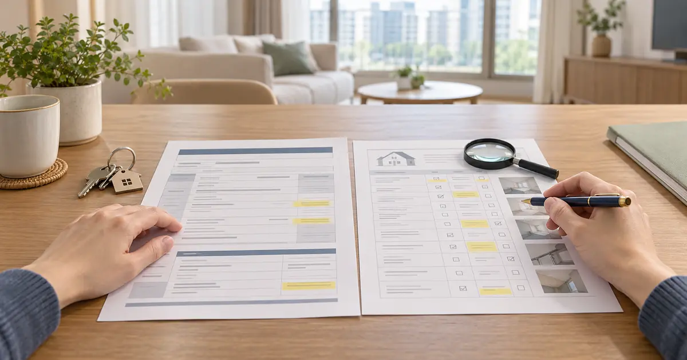
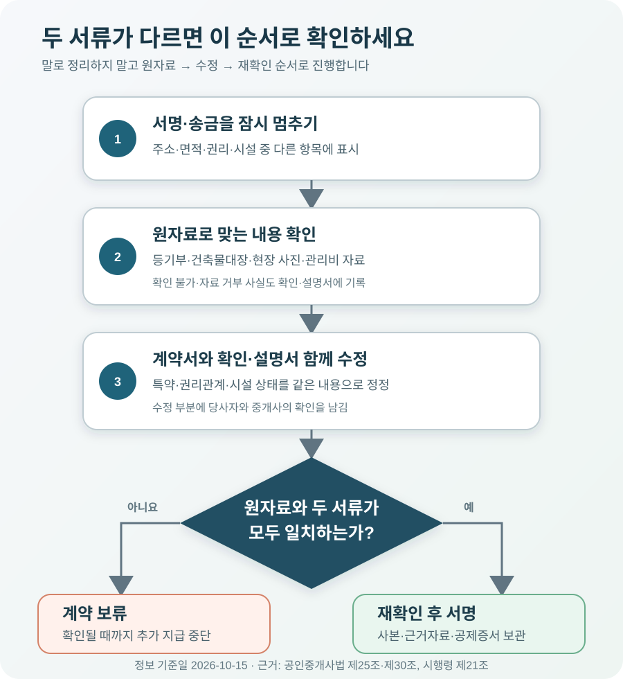

중개대상물 확인·설명서가 계약서와 다르면 무엇부터 확인해야 할까?

계약서와 중개대상물 확인·설명서가 다르면 어느 한쪽이 자동으로 우선한다고 생각하지 말고, 서명과 송금을 멈춘 뒤 원자료로 맞는 내용을 확인해야 합니다. 계약서는 매도인·매수인 또는 임대인·임차인이 합의한 권리와 의무를 적는 문서이고, 확인·설명서는 공인중개사가 물건의 상태와 권리관계를 확인해 설명한 내용을 남기는 법정 서류입니다. 주소·동호수·면적·소유자·근저당·위반건축물·누수 같은 핵심 항목이 다르면 등기사항증명서, 건축물대장, 현장 사진 등으로 사실을 확정한 다음 계약서와 확인·설명서를 모두 고치세요. 이미 계약했다면 서류를 임의로 고쳐 쓰지 말고, 계약 당시 광고·문자·사진과 원본을 보존한 뒤 상대방의 계약 책임과 중개사의 설명 책임을 나눠 검토해야 합니다.
계약서와 확인·설명서는 같은 내용을 베껴 놓은 서류가 아닙니다
부동산 계약서에는 거래 당사자가 합의한 매매대금이나 보증금, 지급일, 인도일, 계약 해제와 손해배상, 특약을 적습니다. 누가 언제 얼마를 지급하고 어떤 상태로 집을 넘길지를 정하는 문서입니다. 반면 중개대상물 확인·설명서는 공인중개사가 중개하는 부동산의 표시, 소유권과 저당권 같은 권리관계, 공법상 제한, 시설 상태, 환경 조건, 세금·중개보수 등을 확인하고 설명한 기록입니다.
공인중개사법 제25조는 개업공인중개사가 중개를 의뢰받으면 중개가 완성되기 전에 물건의 상태와 권리관계 등을 확인해 성실·정확하게 설명하고, 근거자료를 제시하도록 정합니다. 중개가 완성돼 거래계약서를 작성할 때에는 확인·설명서를 거래당사자에게 발급하고 사본을 3년간 보존해야 합니다. 그래서 계약서만 받고 확인·설명서는 나중에 보내 준다는 방식은 계약 당일의 대조 기회를 잃게 만듭니다.
두 서류에 서로 다른 내용이 적혀 있다고 해서 “계약서가 무조건 이긴다”거나 “확인·설명서대로 계약이 바뀐다”고 단순화할 수는 없습니다. 계약상 의무는 계약 내용과 당사자의 합의에 따라 판단하고, 확인·설명서는 중개사가 무엇을 확인해 어떻게 설명했는지 보여 주는 중요한 자료가 됩니다. 따라서 서명 전이라면 모순을 없애는 것이 먼저이고, 서명 후라면 두 문서와 계약 당시 대화를 함께 봐야 합니다.
| 구분 | 주로 담는 내용 | 다르면 먼저 볼 원자료 |
|---|---|---|
| 거래계약서 | 대금·보증금, 지급일, 인도일, 해제, 위약금, 특약 | 당사자 합의, 문자·녹취, 송금내역 |
| 확인·설명서 | 주소·면적·용도, 권리관계, 법적 제한, 시설·환경, 중개보수 | 등기사항증명서, 건축물대장, 토지이용계획, 현장 확인 |
| 둘 다 적는 항목 | 목적물 표시, 거래금액, 당사자와 중개사 정보 | 공적 장부와 신분·대리권 자료를 함께 대조 |
| 현장 상태 | 누수·균열, 수도·전기·난방, 벽면·도배 상태 | 계약 당일 사진·영상, 수리내역, 관리사무소 확인 |
주소보다 먼저 볼 칸은 없지만, 주소만 맞는다고 끝나지는 않습니다
계약 자리에서는 문서가 많아 무엇부터 봐야 할지 막막합니다. 가장 먼저 내가 본 집과 계약하는 집이 같은지를 확인하세요. 계약서, 확인·설명서, 등기사항증명서, 건축물대장의 소재지와 동·호수를 한 줄씩 맞춥니다. 오피스텔이나 다가구주택처럼 호수 표시 방식이 다른 경우에는 건축물대장상 층·호와 현관 표시가 어떻게 연결되는지 설명을 받아 적어 두세요.
다음은 면적과 용도입니다. 전용면적과 공급면적을 섞어 광고한 것은 아닌지, 주거용으로 계약하려는 공간이 건축물대장에서도 해당 용도로 적혀 있는지 확인합니다. “실제로 다들 주거로 쓴다”는 말은 대장의 용도를 바꾸지 않습니다. 위반건축물 표시나 무단 증축이 있다면 대출·보증·원상복구와 이행강제금 위험이 생길 수 있으므로, 계약 진행 여부와 책임을 특약에 구체적으로 정해야 합니다.
세 번째는 권리관계입니다. 등기부 갑구의 소유자와 가압류·가처분, 을구의 근저당권·전세권이 확인·설명서와 맞는지 봅니다. 발급 시간이 오래된 등기부라면 계약 직전에 다시 열람하세요. 등기부에 나오지 않는 임차보증금, 유치권 주장, 신탁원부의 제한 같은 사항은 실제 권리관계 또는 공시되지 않은 권리 항목의 설명과 제출자료를 확인합니다. 매도인·임대인이 자료 제공을 거부했다면 그 사실도 확인·설명서에 적혀 있는지 보세요.
마지막으로 시설 상태와 비용을 봅니다. 누수 흔적, 난방 작동, 수도 수압, 전기 용량, 벽면 균열, 관리비와 사용료의 범위를 현장에서 확인합니다. ‘정상’에 일괄 체크돼 있는데 천장 얼룩이나 고장 난 보일러를 봤다면 그대로 서명하지 마세요. 위치, 증상, 누가 언제 수리할지, 수리되지 않으면 잔금이나 입주를 어떻게 처리할지를 계약 특약에도 연결해야 합니다.

2026년 8월 28일부터 주거용 서식에 신탁·공동담보·공동관리비 칸이 추가됐습니다
2026년 8월 11일 개정된 공인중개사법 시행규칙 별지 제20호서식은 주거용 건축물 확인·설명서에 신탁등기 여부와 공동담보 여부를 확인하는 칸을 마련하고, 관리비 항목에는 공동관리비 금액을 적도록 바뀌었습니다. 국토교통부 부동산거래 전자계약시스템은 새 서식을 2026년 8월 28일 오전 9시부터 적용한다고 안내했습니다.
신탁등기는 등기부상 소유자와 계약하려는 사람이 다를 수 있어 임대 권한과 보증금 계좌를 따로 확인해야 하는 구조입니다. 공동담보는 하나의 대출을 여러 부동산이 함께 담보하는 경우여서 해당 집의 등기부만 보고 전체 채무와 담보 범위를 오해할 수 있습니다. 새 칸에 ‘있음’이 표시됐다면 체크 표시로 끝내지 말고 신탁원부나 공동담보목록 등 연결된 자료를 확인하세요.
공동관리비도 숫자 하나만 봐서는 부족합니다. 월 고정액인지 최근 월 평균인지, 수도·전기·가스 같은 사용료가 포함되는지, 주차비·인터넷·청소비가 별도인지 확인합니다. 계약서 특약에 관리비가 적혀 있는데 확인·설명서의 금액이나 포함 항목과 다르다면 실제 청구 기준을 임대인과 관리 주체에게 확인한 뒤 두 문서를 맞추세요.
계약서에는 ‘근저당 말소’, 확인·설명서에는 ‘현 상태 인수’라고 적혀 있다면
매매가 6억원인 아파트를 계약하는 상황을 가정해 보겠습니다. 등기부 을구에는 채권최고액 3억원의 근저당권이 있고, 계약서 특약에는 “매도인은 잔금과 동시에 근저당권을 말소한다”고 적혀 있습니다. 그런데 확인·설명서의 권리관계에는 근저당권이 적혀 있으면서도 추가 설명에 “매수인이 현 상태로 인수”라고 기재돼 있습니다.
이 경우 어느 문구가 유리한지 논쟁하며 서명할 일이 아닙니다. 매수인이 대출채무와 근저당권을 인수하기로 합의한 것이 아니라면 확인·설명서의 ‘현 상태 인수’를 지우고, 잔금으로 대출을 상환해 말소서류를 받는 순서와 말소가 되지 않을 때 잔금 지급·계약 해제를 어떻게 처리할지를 계약서에 분명히 적어야 합니다. 수정한 확인·설명서에도 같은 취지가 드러나게 하고 당사자와 중개사가 수정 부분을 확인해야 합니다.
| 발견한 불일치 | 그 자리에서 확인할 것 | 서류에 남길 내용 |
|---|---|---|
| 근저당 말소 ↔ 현 상태 인수 | 채무 인수 합의 유무, 상환·말소 방식 | 잔금 동시상환, 말소서류, 불이행 처리 |
| 전용 59㎡ ↔ 84㎡ | 건축물대장 전유면적, 광고의 공급면적 | 정확한 면적과 잘못된 광고 정정 |
| 누수 없음 ↔ 천장 얼룩 | 누수 원인·수리 이력·현재 진행 여부 | 수리 주체·기한·미이행 시 조치 |
| 관리비 10만원 ↔ 최근 18만원 | 포함 항목, 계절 변동, 사용료 별도 여부 | 산정 기준과 별도 부과 항목 |
이미 서명했다면 원본을 보존하고 ‘언제 무엇을 알았는지’부터 기록하세요
계약 뒤 불일치를 발견했다고 해서 계약서나 확인·설명서의 문구를 임의로 덧쓰면 안 됩니다. 원본을 사진이나 PDF로 보존하고, 수정이 필요하면 당사자와 중개사가 합의한 별도 정정서나 추가 합의서를 작성하세요. 원본의 어느 항목을 어떤 이유로 어떻게 바로잡는지, 정정일은 언제인지, 기존 계약의 다른 조건은 유지되는지를 적습니다.
사실을 발견한 시점과 손해를 줄이기 위해 한 행동도 남기세요. 중개사와 상대방에게 보낸 문자·전자우편, 통화 뒤 정리 메시지, 등기부와 건축물대장 발급 시각, 현장 사진, 수리 견적, 대출·보증 거절 사유가 중요합니다. 누수처럼 시간이 지나면 상태가 달라지는 하자는 수리 전에 원인 조사와 사진을 확보하고, 긴급 수리가 필요하면 견적과 영수증을 보관합니다.
계약을 취소하거나 손해를 청구할 수 있는지는 불일치의 중요성, 상대방과 중개사가 알고 있었는지, 계약 결정에 어떤 영향을 줬는지, 특약과 설명 내용에 따라 달라집니다. 작은 오타와 소유자·용도·선순위 권리·상습 누수의 허위 기재를 같은 수준으로 볼 수 없습니다. 잔금이나 입주가 임박했다면 지급을 임의로 중단하기 전에 자료를 갖고 법률 상담을 받아 동시이행·해제 요건과 통지 방법을 확인하세요.
틀린 설명으로 손해가 생겼다면 중개사의 설명 의무와 인과관계를 봅니다
공인중개사법 제30조는 개업공인중개사가 중개행위를 하면서 고의 또는 과실로 거래당사자에게 재산상 손해를 발생하게 한 때 손해를 배상할 책임이 있다고 정합니다. 하지만 확인·설명서에 틀린 내용이 있다는 사실만으로 모든 손실이 자동 배상되는 것은 아닙니다. 중개사가 확인할 수 있었던 자료와 현장 상태, 실제 설명, 의뢰인이 제공한 자료, 거래당사자가 직접 확인한 내용, 잘못된 설명과 손해 사이의 관계를 함께 봅니다.
중개사무소는 손해배상 책임을 보장하기 위해 보증보험이나 공제 등에 가입해야 하고, 중개가 완성되면 거래당사자에게 보장금액·보증기간·보증기관과 지급 절차를 설명하고 관계 증서 사본을 줘야 합니다. 계약 때 받은 공제증서나 보증보험 증서를 찾아 두세요. 다만 보장한도는 손해액을 곧바로 인정한 금액이 아니며, 청구 절차와 책임 판단을 거쳐야 합니다.
행정상 위반 여부를 확인하려면 중개사무소 소재지 관할 시·군·구의 부동산중개업 담당 부서에 계약서, 확인·설명서와 증거를 제출해 문의할 수 있습니다. 손해배상 문제는 행정처분과 별개이므로, 금액이 크거나 잔금 전 긴급한 판단이 필요하면 대한법률구조공단 또는 부동산 분쟁 경험이 있는 변호사에게 상담하세요. 임대차 당사자 사이의 분쟁이라면 한국부동산원이 운영하는 주택임대차분쟁조정위원회 이용 가능성도 확인할 수 있습니다.
계약 당일에는 이 순서로 확인하세요
- 최신 원자료를 펼칩니다. 당일 등기사항증명서, 건축물대장, 필요한 토지·신탁·공동담보 자료를 준비합니다.
- 목적물을 먼저 맞춥니다. 주소, 동·호수, 토지와 건물 표시, 면적, 용도가 네 문서에서 같은지 봅니다.
- 사람과 권한을 맞춥니다. 소유자, 계약 당사자, 대리인 위임장·인감증명서, 입금 계좌 명의를 확인합니다.
- 권리와 돈을 맞춥니다. 근저당·압류·임차보증금, 말소·인수 조건, 거래금액, 관리비, 중개보수를 대조합니다.
- 현장 상태를 기록합니다. 누수·균열·보일러·수도·전기·도배 상태를 사진으로 남기고 수리 약속을 특약에 적습니다.
- 다른 칸은 두 서류 모두 고칩니다. 수정 전후가 보이게 정정하고 당사자와 중개사가 확인한 흔적을 남깁니다.
- 사본과 보증 자료를 받습니다. 서명한 계약서, 확인·설명서, 공제증서·보증보험 증서, 설명 근거자료를 한 묶음으로 보관합니다.
자주 묻는 질문
확인·설명서를 계약 다음 날 받아도 괜찮나요?
법은 중개가 완성돼 거래계약서를 작성할 때 확인·설명서를 발급하도록 정합니다. 계약 당일 함께 받아야 계약서와 원자료를 대조하고 틀린 항목을 고칠 수 있습니다. 대구지방법원은 계약서 작성 약 두 달 뒤 확인·설명서를 준 사안에서 지연 교부에 해당한다고 판단했습니다.
집주인이 자료를 주지 않아 중개사도 몰랐다고 합니다
공인중개사법 시행령 제21조는 매도·임대 의뢰인 등이 상태 자료 요구에 응하지 않으면 그 사실을 매수·임차 의뢰인에게 설명하고 확인·설명서에 적도록 합니다. 확인하지 못한 핵심 위험이 남아 있다면 빈칸이나 추정으로 채우지 말고 계약을 보류하는 편이 안전합니다.
서명했으니 확인·설명서 내용에 모두 동의한 것인가요?
서명은 설명을 받고 문서를 교부받았다는 중요한 자료가 되지만, 허위 사실이 진실로 바뀌거나 중개사의 법정 의무가 사라지는 것은 아닙니다. 다만 분쟁에서는 서명한 내용과 현장에서 알 수 있었던 사정도 함께 검토될 수 있으므로, 서명 전에 빈칸과 불일치를 바로잡는 것이 가장 좋습니다.
틀린 항목이 있으면 중개보수를 안 줘도 되나요?
확인·설명 의무 위반, 거래 성립, 중개보수 지급 의무와 손해배상은 서로 다른 쟁점입니다. 단순 오기인지 중대한 설명 누락인지, 중개사의 고의·과실과 손해가 있는지에 따라 달라지므로 보수를 임의로 상계하기 전에 계약서와 자료를 갖고 상담하세요.
공식 자료
- 국가법령정보센터 — 공인중개사법 제25조(중개대상물의 확인·설명)
- 국가법령정보센터 — 공인중개사법 제30조(손해배상책임의 보장)
- 국가법령정보센터 — 공인중개사법 시행령 제21조(확인·설명 사항)
- 국가법령정보센터 — 중개대상물 확인·설명서Ⅰ(주거용 건축물, 2026. 8. 11. 개정)
- 국토교통부 부동산거래 전자계약시스템 — 2026년 확인·설명서 서식 변경 안내
- 대한민국 법원 — 대구지방법원 2023구단11653 판결 요지
- 찾기쉬운 생활법령정보 — 중개계약과 공인중개사의 책임
정보 기준일: 2026-10-15. 이 글은 일반적인 부동산 매매·주택 임대차 중개 상황을 설명한 정보이며 개별 계약에 대한 법률 자문이 아닙니다. 계약 내용, 설명 자료, 불일치의 중요성, 당사자의 인식과 손해 발생 경위에 따라 결론이 달라질 수 있습니다. 계약 해제, 잔금 지급 중단, 손해배상이나 보험·공제 청구 전에는 최신 법령과 원문을 확인하고 전문가에게 개별 상담을 받으세요.
계약 전 서류를 함께 확인하세요
- 전세계약 체크리스트소유자·권리·특약·입금 계좌 확인
- 매매 잔금일 체크리스트등기·대리권·잔금·말소 조건 확인